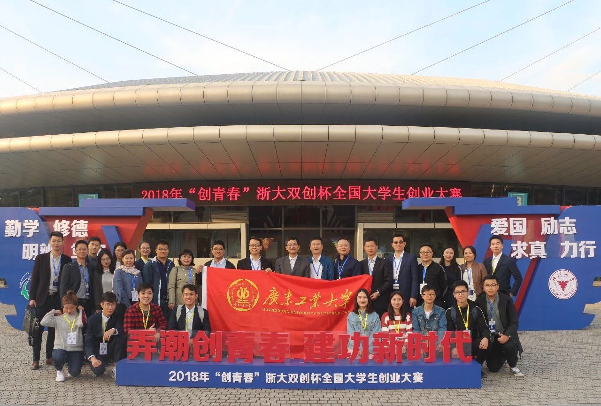

我校连续四届在“创青春”国赛中夺金
11月3日下午，2018年“创青春”全国大学生创业大赛在浙江大学圆满落幕。我校选送作品获得2金1银3铜，以总分400分的好成绩捧得“优胜杯”，全省高校中位列第2！这是我校自2012年以来，连续四届在“创青春”全国大学生创业大赛（前身为“挑战杯”中国大学生创业计划竞赛）中摘得金奖。

今年“创青春”全国大学生创业大赛从始至终得到学校的高度重视和相关部门、学院的支持配合。学校领导多次关心和指导赛事准备工作。学校团委先后召开了申报工作筹备会议、经过省赛，认真挑选参赛团队项目申报国赛，邀请了校内外专家组织模拟答辩会。相关学院领导和指导教师认真指导参赛学生完善作品，组织团队进行答辩演练。终审决赛期间，学校党委副书记、纪委书记汤耀平、团广东省委副书记武一婷、学校团委相关负责人、参赛学生所在学院的党委副书记、团委书记及指导老师赴杭州参观学生参赛团队展示推介、指导学生参赛项目团队，给了学生极大的参赛信心和鼓舞。
本届大赛以“弄潮创青春，建功新时代”为主题，旨在通过比赛，提高高校学生创新创业精神、创造意识和创业能力，让青年学子创新创业的实践脚步，与时代旋律同频共振，与民族梦想同向同行。创业计划竞赛、创业实践挑战赛和公益创业赛三项主体赛事，经过各高校校赛、各省市自治区省赛、全国复赛选拔，共有来自全国32个省市自治区、新疆生产建设兵团、香港特别行政区、澳门特别行政区197所高校的369件作品入围终审决赛。

来源:广东工业大学新闻网